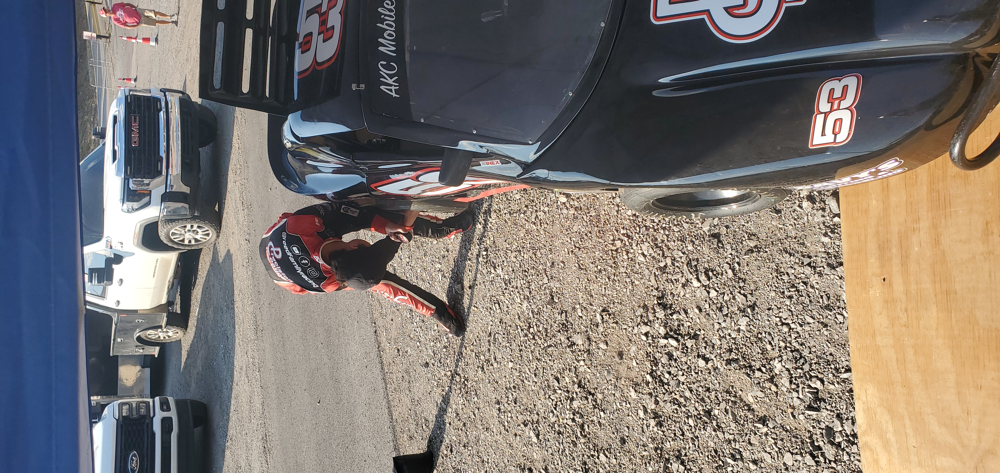
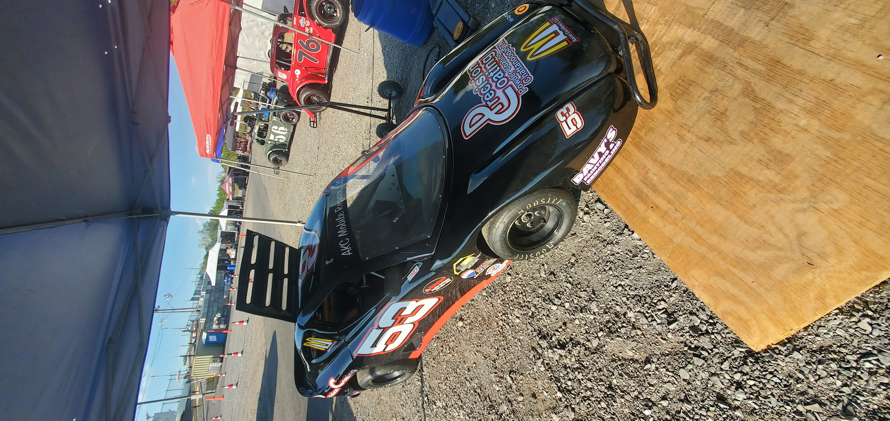
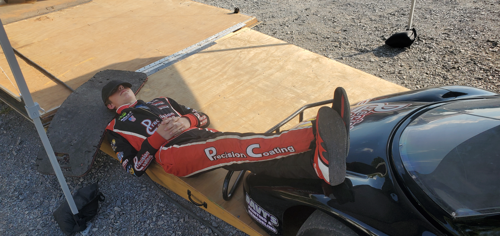

GREENBRIER, Tenn. — Reed Family Racing made its first trip of the season to Veteran’s Motorplex at Highland Rim Saturday night, and for TW Reed and the No. 53 team, the unfamiliar territory ended with a podium finish.
TW entered the weekend having never raced at the historic Tennessee oval. While the track itself was new to him, some of the competition was not. Several drivers in the field were racers TW had competed against before, adding another chapter to familiar rivalries as the national championship points season begins to wind down.
With points becoming increasingly important and opportunities running out, the intensity surrounding every position was evident throughout the night.
The first practice session was productive for the No. 53 team. With no previous racing experience at Highland Rim to fall back on, TW's first priority was simply learning the racetrack — finding his line, figuring out where the car wanted to be, and then beginning the process of finding speed.
Each lap gave him a little more information, and by the end of the session, the team had begun building a notebook for a track that was completely new to them.

Between sessions, TW gets hands-on with the No. 53 as the team worked to improve the car throughout his Highland Rim debut.
Qualifying, however, left TW with plenty of work to do.
The No. 53 qualified 10th, putting him deep in the field and setting up what would need to be a patient drive through traffic if he wanted to contend near the front.
The final practice session didn't provide the confidence boost the team had hoped for, either. It wasn't a particularly strong session, leaving the team with some questions heading into the feature.
But when it counted, the night changed.

TW Reed and the No. 53 prepared to take on Highland Rim for the first time, carrying the support of Reed Family Racing’s partners into another race weekend.
Once the feature began, TW began working his way forward. There was another challenge almost immediately. During approximately the first five laps, TW had difficulty hearing his spotter, forcing him to rely heavily on what he could see for himself. “All I really did was just look through my mirrors and watch the flagman. All really one person can do.”
The No. 53 was also a little loose, but TW continued to manage the car, navigate traffic and gain positions.
Rather than forcing the issue late in the race, TW focused on finishing what had become an impressive run through the field. After qualifying 10th in his first appearance at Highland Rim, he crossed the finish line third.
Asked afterward whether he was thinking about trying to make a run at second or protecting the result, TW said the priority was clear. “Definitely a solid podium finish. I was just trying to bring the car home in one piece.”
For a driver who began the evening simply trying to learn where to put the car, a 10th-to-third charge and podium finish in his Highland Rim debut was a strong way to end the night.
TW also made sure the people who helped make the weekend possible weren't forgotten.
“It was really fun. A little bit loose. I lost my spotter in the first five laps — couldn't really hear him a whole lot. I just wanted to thank a couple people real quick. I wanted to thank my sponsors, the fans for coming out, sweating their butts off, and my dad for driving me here and spotting me.”
When asked who he most wanted to recognize after the race, his answer was simple: “I just want to recognize the people that got me here.”
Reed Family Racing would like to thank everyone who continues to make it possible for TW, Logan and the entire team to compete throughout the 2026 season.
A special thank you goes to Precision Coating, K&A Electric, Sir Goony’s, McDonald’s/Aaron’s Excellence LLC, AKC Mobile Repair, Gordy’s Stump Grinding, Nathan Phillips Realty, Jackie Bridges State Farm, The Pool Dude, Underdog Mechanical, Davy’s Painting & Remodeling, All About Concrete & Masonry, and James Wilson Company.
We also want to thank the fans who came out and supported the racers on a hot night at Highland Rim. Your support at the racetrack — along with the support of our sponsors, family, friends and crew — keeps Reed Family Racing going.

TW catches a few quiet minutes beside the No. 53 during a long, hot afternoon at Highland Rim before eventually charging from 10th to a third-place finish.
The No. 53 team won't have much time to enjoy the podium before attention turns to another challenge. Next up: Nashville Fairgrounds Speedway on October 3. After going from 10th to third at a track he'd never raced before, TW and the Reed Family Racing team will look to carry that momentum with them to Nashville while Logan Conner returns to seek revenge at the Fairgrounds.